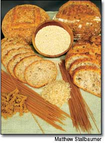

Why Whole Foods are Better
There's just no substitute for meeting your nutritional needs the old-fashioned way. "It doesn't matter how you try," says Cornell University food scientist Rui Hai Liu, "vitamin supplements cannot match the combinations of compounds in whole foods." Taken together within a whole (minimally processed) food, these substances are synergistic, producing a stronger effect than any of the individual nutrients does on its own.
Liu and his colleagues came to their conclusions after years of studying more than 8,000 antioxidants and other chemicals found in fruits, vegetables and whole grains. They found that because these compounds differ in their molecular size, polarity and solubility, they produce a powerful natural combination that is more biologically available to human cells, organs and tissues than any single nutrient or pill.
One medium apple, for example, with only 6 milligrams (mg) of vitamin C, has enough other antioxidants - quercetin, procyanidins, carcchin and epicatcchin - to produce as much antioxidant activity as 1,500 mg of vitamin C supplements.
In the case of whole grains, part of the advantage comes from the digestive process itself. Compounds in whole grains are bound in the cell walls and until recently were believed to be an indigestible part of the fiber. In fact, 90 percent of the compounds are bound, passing through the stomach and small intestines undigested.
But Liu found that the bound compounds are released further down by the microflora in the colon. These compounds in whole wheat have potent antioxidant and anticancer properties that can profoundly affect colon health. Refined grain products even "fortified" with added vitamins cannot compare.
"We still don't know all the compounds that are important or how they work together," Liu says. "I have never taken dietary supplements. I eat all kinds of fruit, including a daily apple, vegetables and whole grains. There is no other way to get that much nutrition."
- Linda J. Quinn
[Source: Eating Well magazine ( www.eatingwell.com ) and American Journal of Clinical Nutrition, both September 2003.]
Frankenfood Setbacks Chronicled Around the World
Two manufacturers of genetically modified (GM) crops took major hits to their international expansion plans this spring, and a U.S.-based organic group is urging a tightening of regulations of GM crops in this country.
In Great Britain, one of the manufacturing firms, Bayer CropScience, discontinued its efforts to commercialize GM corn, citing constraints set by the UK government, which had just allowed the crop after a three-year review.
In Australia, the Victoria state government has implemented a four-year moratorium on GM crops, halting for the time being efforts by another manufacturer, Monsanto Australia, to introduce GM canola there. Other Australian states have taken similar actions.
In the United States, the Organic Trade Association is calling for more regulation of the GM industry. Also, the Pew Initiative, in a special report released in April, has laid out a number of options that ought to be considered in any updating of the current GM regulations. For details on either U.S. action, go to: www.ota.com and www.pewagbiotech.org .
|
 |
|
|